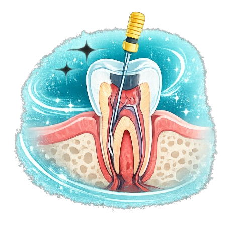
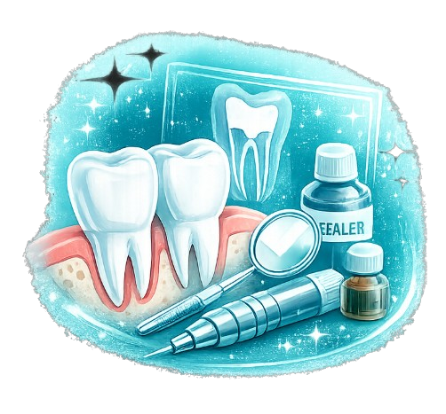

Preserve your natural tooth with advanced root canal therapy designed to eliminate infection, relieve pain, and restore long-term oral health.

Root Canal Treatment is a specialized procedure used to remove infected or damaged pulp from inside the tooth while preserving the natural tooth structure.
At Serenity Dental, we combine advanced rotary instruments, digital imaging, and precision techniques to make root canal therapy comfortable, effective, and minimally invasive — helping you restore both function and comfort quickly.
Every treatment begins with a thorough examination using digital X-rays and diagnostic imaging to identify the extent of infection and create a precise treatment plan.
Our root canal services include:

Eliminates infection and discomfort effectively.
Saves your natural tooth from extraction.
Modern rotary systems ensure precision and comfort.
Minimally invasive techniques for quicker healing.
Common questions about root canal treatment and recovery.
Modern root canal treatments are virtually painless thanks to advanced anesthesia and rotary techniques.
Most root canal procedures are completed in one or two appointments, depending on the complexity of the infection.
In many cases, a crown is recommended after root canal treatment to strengthen and protect the tooth.
With proper care and regular dental visits, a root canal treated tooth can last for many years or even a lifetime.